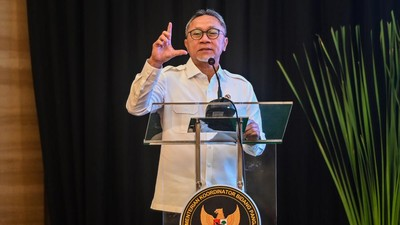

Menko Bidang Pangan, Zulkifli Hasan, mengatakan pemerintah saat ini mendorong percepatan pengelolaan sampah nasional dengan menggunakan teknologi pirolisis. (ANTARA FOTO/Rivan Awal Lingga)
Jakarta, CNN Indonesia -- Menteri Koordinator Bidang Pangan, Zulkifli Hasan, mengatakan pemerintah saat ini mendorong percepatan pengelolaan sampah nasional dengan menggunakan teknologi pirolisis. Politik Dengan teknologi pirolisis, sampah bisa diolah menjadi bahan bakar terbarukan, sekaligus melengkapi pembangunan Pengolahan Sampah menjadi Energi Listrik (PSEL).
Jakarta, CNN Indonesia -- Menteri Koordinator Bidang Pangan, Zulkifli Hasan, mengatakan pemerintah saat ini mendorong percepatan pengelolaan sampah nasional dengan menggunakan teknologi pirolisis. Politik Dengan teknologi pirolisis, sampah bisa diolah menjadi bahan bakar terbarukan, sekaligus melengkapi pembangunan Pengolahan Sampah menjadi Energi Listrik (PSEL).
"Persoalan sampah tidak bisa lagi ditangani dengan cara biasa. Kita membutuhkan percepatan melalui intervensi teknologi," kata Zulkifli dalam pernyataannya. "Karena itu, selain pembangunan PSEL, pemerintah juga mendorong pemanfaatan teknologi pirolisis agar semakin banyak sampah yang dapat diolah menjadi energi," lanjut pria yang akrab disapa Zulhas tersebut.
Taipan Ekopedia Properti Gaji Bumn Efisiensi Anggaran Ekonomi Bisnis Zulhas: Pemerintah Dorong Teknologi Pirolisis Ubah Sampah Jadi Energi CNN Indonesia Minggu, 09 Agu 2026 12:47 WIB Menko Bidang Pangan, Zulkifli Hasan, mengatakan pemerintah saat ini mendorong percepatan pengelolaan sampah nasional dengan menggunakan teknologi pirolisis. (ANTARA FOTO/Rivan Awal Lingga) Jakarta, CNN Indonesia -- Menteri Koordinator Bidang Pangan, Zulkifli Hasan, mengatakan pemerintah saat ini mendorong percepatan pengelolaan sampah nasional dengan menggunakan teknologi pirolisis. Politik Dengan teknologi pirolisis, sampah bisa diolah menjadi bahan bakar terbarukan, sekaligus melengkapi pembangunan Pengolahan Sampah menjadi Energi Listrik (PSEL). Lihat Juga : Zulhas Kejar Dapur MBG di Daerah 3T Rampung Pekan Ini "Persoalan sampah tidak bisa lagi ditangani dengan cara biasa. Kita membutuhkan percepatan melalui intervensi teknologi," kata Zulkifli dalam pernyataannya. "Karena itu, selain pembangunan PSEL, pemerintah juga mendorong pemanfaatan teknologi pirolisis agar semakin banyak sampah yang dapat diolah menjadi energi," lanjut pria yang akrab disapa Zulhas tersebut. Ads end in 02:15 Zulhas memaparkan, teknologi pirolisis punya potensi besar dalam pengelolaan sampah karena mampu mengolah sampah yang sudah menumpuk di Tempat Pemrosesan Akhir (TPA) jadi bahan bakar terbarukan setara solar. Politik Ia mengklaim, bila teknologi ini diterapkan secara luas, maka akan mampu menangani sekitar 20 persen persoalan sampah nasional.
Sejumlah instansi dan pemerintah daerah juga ikut terlibat dalam penerapan teknologi ini. Salah satunya adalah kolaborasi Tentara Nasional Indonesia (TNI) Angkatan Darat dengan pemerintah daerah. Kolaborasi TNI-AD dengan Pemda tersebut di antaranya mendukung percepatan Proyek Strategis Nasional PSEL Bogor Raya 1 serta pengembangan proyek percontohan pirolisis di lima lokasi yaitu 5 lokasi: Kota Bogor, Kab. Bogor, Kota Semarang, Kota Bekasi dan DKI Jakarta.
Zulhas mengapresiasi dukungan TNI-AD yang turut mengambil peran dalam percepatan implementasi teknologi pirolisis. Kolaborasi TNI dengan pemerintah daerah dinilai menjadi langkah konkret untuk mempercepat pengolahan sampah menjadi energi. Menko Pangan memaparkan Indonesia dalam waktu dekat akan memiliki 13 lokasi PSEL, sebagai implementasi Peraturan Presiden Nomor 109 Tahun 2025 untuk mempercepat pembangunan PSEL di berbagai daerah.
Implementasi itu termasuk PSEL di Kota Palembang yang ditargetkan mulai beroperasi pada Oktober 2026. Namun kapasitas tersebut baru mampu menangani sekitar 22 persen timbunan sampah nasional, sehingga dibutuhkan teknologi pelengkap seperti pirolisis. Kimia Ia menegaskan, keberhasilan program ini memerlukan komitmen kuat pemerintah daerah, terutama dalam penyediaan lahan, percepatan perizinan, serta menjamin pasokan sampah yang memadai bagi fasilitas pengolahan.
Pada saat yang sama, percepatan pengolahan sampah juga penting untuk mengantisipasi meningkatnya risiko kebakaran TPA akibat musim kering yang dipengaruhi El Nino. "Kita ingin persoalan sampah tidak hanya selesai, tetapi juga mampu menghasilkan manfaat ekonomi dan energi bagi masyarakat. Dengan gotong royong dan kerja cepat, target itu dapat kita capai," kata Zulkifli Hasan.